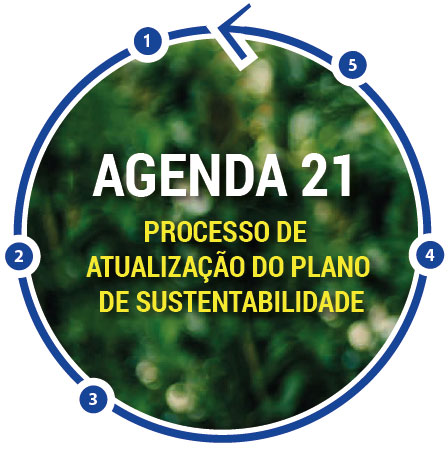

Breve história:
O desenvolvimento da Agenda 21 começou em 23 de dezembro de 1989 com a aprovação em assembléia extraordinária das Nações Unidas uma conferência sobre o meio ambiente e o desenvolvimento como fora recomendado pelo relatório Brundtland e com a elaboração de esboços do programa, que, como todos os acordos dos estados-membros da ONU, sofreram um complexo processo de revisão, consulta e negociação, culminando com a segunda Conferência das Nações Unidas para o Meio Ambiente e Desenvolvimento, mais conhecida como Rio-92 ou Eco-92, entre 3 e 14 de junho de 1992 no Rio de Janeiro, onde representantes de 179 governos aceitaram adotar o programa.
Capítulos da Agenda 21:
- Luta contra a pobreza
- Evolução das modalidades de consumo
- Dinâmica demográfica e sustentabilidade
- Proteção e fomento da saúde humana
- Proteção da atmosfera
- Luta contra o desmatamento
- Conservação da diversidade biológica
- Gestão ecologicamente racional da biotecnologia
Agenda 21 Brasileira:
 |
Em 1997 foi criada Agenda 21 Brasileira, com o propósito de firmar compromissos da sociedade brasileira com o desenvolvimento sustentável e, com isto, promover padrões de consumo e produção sustentáveis (AGENDA 21 BRASILEIRA, 2004). |
Critérios sustentáveis:
|
|
 |
Verificou-se a existência de fundamentação legal suficiente para a inserção dos critérios sustentáveis nas compras públicas. Com isso, demonstra-se que estes critérios podem ser utilizados, desde que a sua aplicação não contrarie aos princípios que norteiam a Administração Pública (DOROCINSKI, 2011).
Passos para inclusão de critérios sustentáveis nas compras públicas:
- Identificar os bens, serviços e obras mais adquiridos (bens comuns)para analisar a viabilidade de adotar exigências de sustentabilidade nas licitações futuras, optando por produtos equivalentes que causem menor impacto ambiental e tenham maior eficiência energética. Também devem ser exigidas práticas sustentáveis nas execuções dos serviços e obras.
- Verificar a disponibilidade no mercado. Há grande oferta em relação a muitos produtos. Existem portais com catálogos de bens e serviços sustentáveis.
- Incluir gradativamente critérios ambientais, elaborando especificações técnicas claras e precisas dos produtos, bens e construções sustentáveis.
- Os novos critérios deverão ser incluídos nos editais de compras, serviços e obras.
- Comunique-se com outros gestores para trocar informações, pedir auxílio e sensibilizá-los.